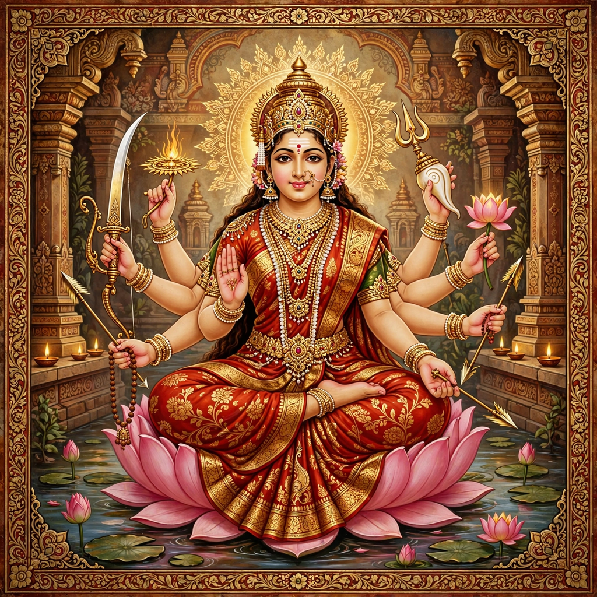

Devi

| Sanskrit | देवी (Devī) |
|---|---|
| Affiliation | Mahadevi, Shakti, the Divine Feminine |
| Abode | Manidvipa |
| Mantra | Om Aim Hrim Klim Chamundayai Vichche |
| Festivals | Navaratri, Durga Puja, Dussehra |
Devi (Sanskrit: देवी, "goddess") is the Sanskrit word for the divine feminine in Hinduism. Devi is regarded as the supreme goddess and the source of all energy (Shakti) in the universe in the Shaktism tradition, one of the major denominations of Hinduism. As Mahadevi, the Great Goddess, she is worshipped as the ultimate reality from whom all other gods and goddesses arise.
Theology
In Shaktism, Devi is the active, dynamic principle of the cosmos, while the masculine divine is passive consciousness. The Devi Mahatmyam, a section of the Markandeya Purana composed around the 5th–6th century CE, is the foundational scripture of goddess worship. Another key text, the Devi Bhagavata Purana, presents Devi as the supreme being and creator of the universe.
Devi manifests in many forms. Her benevolent forms include Lakshmi, goddess of wealth; Saraswati, goddess of knowledge and the arts; and Parvati, the gentle consort of Shiva. Her fierce forms include Durga, the slayer of the buffalo demon Mahishasura; Kali, the dark goddess of time and destruction; and Chamunda. The ten Mahavidyas are a group of ten tantric aspects of the goddess.
Worship
The principal festival honouring Devi is Navaratri, the "nine nights" celebrated in autumn, culminating in Vijayadashami (Dussehra). In West Bengal, Durga Puja is the largest festival of the year, featuring elaborate temporary shrines (pandals) and clay images of Durga. Goddess worship is especially strong in eastern and northeastern India, and in the Himalayan foothills.